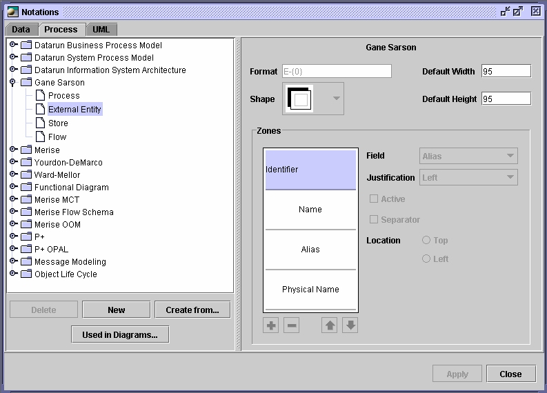

Notations
Notations are the set of graphic display options used for associating
the elements of
the model. There are many predefined notations, however, you can
customize existing
notations or create your own. If you choose not to overwrite the
notations,
projects will have default notations that apply to all diagrams.
Inheritance
The diagrams inherit default notations unless the user overwrites their
value. If the
value is changed on the project, but is not overwritten, it will also
change on the
diagram.
Predefined
notations
Open ModelSphere lets you work with four predefined
notations (Datarun,
Information Engineering, Logical Data Structure and UML)
for the data modeling and a lot for the process modeling (ex. Gane
and Sarson, Merise, Yourdon-DeMarco, etc.).
The terminology for process model concepts follows the chosen notation
according to established names within the related method.
Predefined notations can not be changed. However, you can create your
own notations.
See next section.
You can switch notations at any time during your work. To change
notations:
- Make sure project is selected (highlighted)
- In the main menu, choose Format > Default Notations...
A list will appear.
- Choose the predefined notation by clicking it.
Working
with user defined notations
Data
model notation’s window
It is possible to customize existing notations or define your own,
either by creating
one from another notation or creating a new one. From the main menu,
select Format
> Project Notations. Upon selecting project notation, a window
will appear: the
notations’ dialog. From this menu you can customize your own
notation.

It is possible to delete, import existing notations or add new
notations. When you are done, click Apply to validate your selection
and Close.
The
process model notation’s window
ModelSphere offers many predefined shapes for processes, external
entities and stores.

Changing
the shapes of processes, external entities or stores
The shapes of your graphical objects will be different depending on the
notation you
have chosen.
It is possible to delete, create from
existing notations or add new
notations. When you are done, click Apply to validate your selection
and Close.
Contrary to the stores and external entities where the prefix is
only added graphically
to the identifier, the flow's prefix is used in the creation of its
identifier. Changes in the flow's prefix will be carried out with the
next creation of flow.